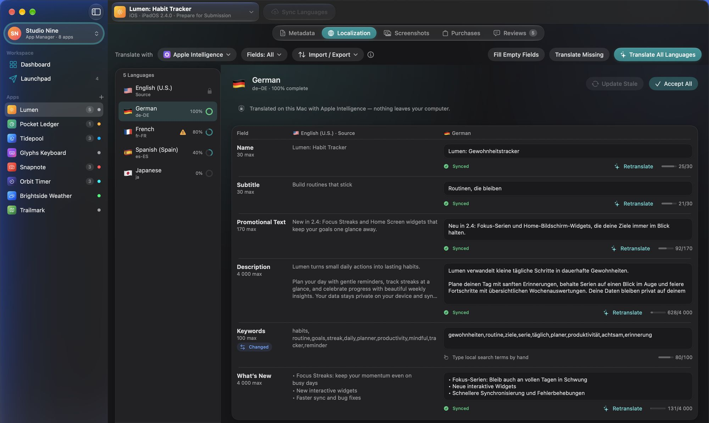
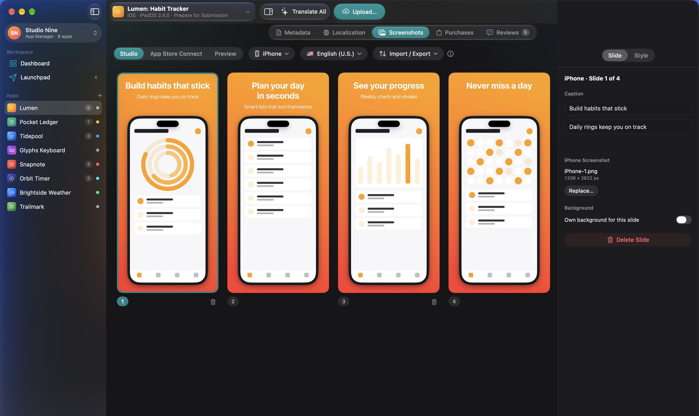
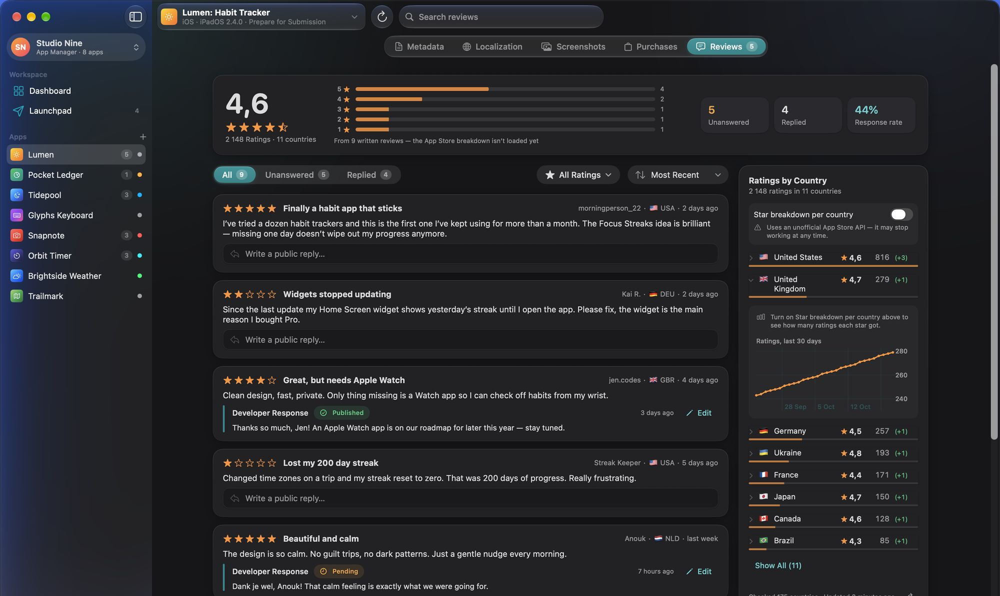

How AppShipper makes ASO and user feedback easier
Translated metadata, localized screenshots and a close eye on reviews all help an app on the App Store. They’re also repetitive. Here’s how AppShipper takes care of the busywork.
App Store Optimization is rarely one clever trick. Much of it is patient, repetitive work: the same fields, the same screenshots and the same checks, multiplied by every language and every app. That’s exactly the kind of work a Mac app can make lighter.
Translate your metadata in one pass
App Store search looks at text such as your app’s name, subtitle and keywords. Apple also recommends localizing your product page and tailoring keywords for each market, and notes that a localized page may make people more likely to download your app.
In AppShipper, Translate All Languages handles the name, subtitle, promotional text, description and What’s New in one run. You can use Apple Intelligence on your Mac or a cloud AI provider with your own API key. Character limits are visible for every field, and you review the result before anything is synced to App Store Connect.
Keywords are the deliberate exception. A literal translation rarely matches what people actually type into search, so you write those by hand for each language.

Screenshots that speak your customer’s language
Apple says up to three screenshots may appear right in search results, so they’re often the first thing people see. A caption in their own language explains your app at a glance, and that can turn more views into downloads, one of the signals Apple lists for search.
Some ASO teams also report that caption text can affect search directly. Apple hasn’t confirmed this, so I’d treat it as a possible bonus rather than the reason to do it.
In Screenshot Studio you design your slides once and localize only the captions. Translate All picks up captions that are missing or out of date. You review them, then upload the set for every language and device size in one go.

Don’t let critical reviews slip by
Reviews are some of the most honest feedback you’ll get: what broke, what’s confusing, what people wish your app could do. They matter for discovery too. Apple says ratings and reviews can influence search ranking, and when you reply, the reviewer is notified and can update their review.
That’s why AppShipper puts them in front of you. By default, the Dashboard’s Needs Attention list highlights unanswered reviews with 4 stars or fewer, with the apps that have the most 1–2 star reviews first. Four stars are included on purpose: those reviews often explain what’s standing between you and a five.
One click opens that filtered list, with reviews from every country in one place. You can start from an AI-drafted reply and edit it, or turn on notifications for 1–2 star reviews only.
See where your ratings are moving
Your rating is specific to each App Store territory, and a single global number can hide what’s happening in one market.
Ratings by Country shows the average and number of ratings for each country, plus how that number changed since a check at least a day earlier: (+3) in green, (−3) in red. Open a country to see a 30-day chart. If you turn on the optional star breakdown, you can also see which star levels those new ratings went to, so you know whether a jump is good news. It relies on an unofficial App Store API, so it may stop working at any time.
Rating history is kept on your Mac and starts with your first check, so changes appear after about a day.

Try it on your own app
AppShipper is free for one app, with every feature included, and you can explore it with sample data before connecting anything. Your App Store Connect API key stays in your Mac’s Keychain, and there are no AppShipper servers in between.
See the AppShipper page or download it from the Mac App Store. If something is missing, write to support@antcraft.dev. I read every message.